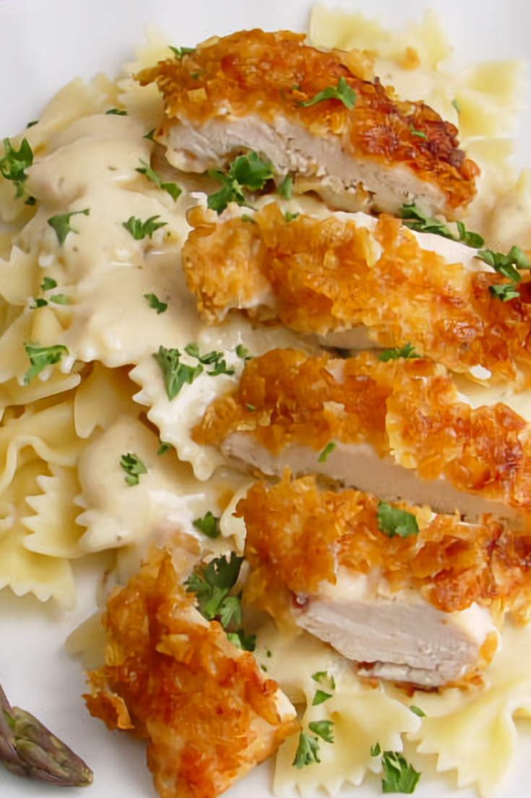

Chicken Alfredo Pasta

Description
A fairly quick, easy to prepare dish for the family!
This is a simple pasta dish comprised of your pasta of choice (we like
Penne or Spaghetti), topped with sliced, breaded chicken tenders and
creamy Alfredo sauce
Ingredients
- 1 box of your choice of Pasta
- 1 bottle of Alfredo Sauce
- (3+) Pre-cooked Breaded/Fried Chicken Tenders
Directions
- Boil water in a pot on stove. Place pasta in pot and let sit for
around 10 minutes, keeping water close to a boil and stirring
pasta every 2 minutes or so
- Chop chicken tenders into desired size pieces
- Prepare a cooking pan with cooking spray on medium low heat. Once
heated, pour alfredo sauce followed by chicken into pan. Heat for
about 10 minutes.
- Drain pasta and serve on plate. Serve chicken and sauce on top